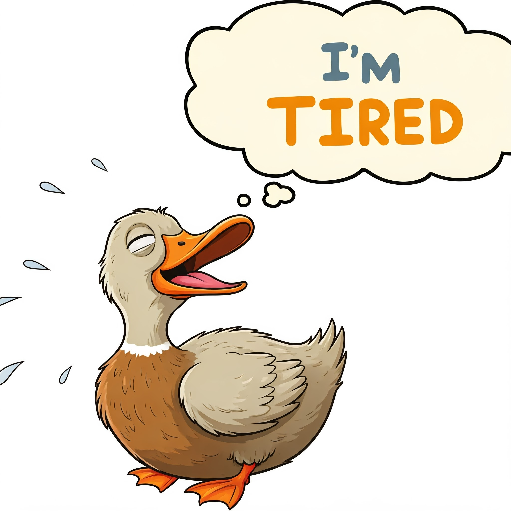

05, Feb 2024
Handling burnout as a software developer
Handling Burnout as a Software Developer: Reclaiming our Passion
If you’re reading this, chances are you’ve encountered the beast that is burnout. Whether you’re knee-deep in code or handling multiple projects, burnout can creep up on even the most seasoned developers. Let’s explore how we can recognize, tackle, and prevent burnout, all while keeping our sanity intact.

What is Burnout?
It is not just about being tired. It's a state of emotional, physical, and mental exhaustion caused by prolonged and excessive stress. In the tech world, it’s particularly common due to long hours, tight deadlines, and the ever-present pressure to keep up with rapid changes. Symptoms include:
-
Constant Fatigue: You’re tired, even after a good night sleep.
-
Reduced Performance: Tasks that were once easy now seem like crossing the ocean.
-
Detached Attitude: You feel disconnected from your work and colleagues.
-
Physical Symptoms: Headaches, stomach issues, and other stress-related ailments.
Does any of this strike a chord? yes? what about these
red flags?
-
Dread: You’re dreading the thought of going to work or even just logging into your laptop.
-
Procrastination: Tasks that you used to tackle head-on are now met with avoidance.
-
Irritability: You’re snapping at colleagues or loved ones for no apparent reason.
-
Lack of Motivation: You’re struggling to find any enthusiasm for projects you once loved.
If any of this applies to you, I just want to say, you are not alone .. again; you .. are .. not .. alone!
Strategies to Combat Burnout
1. Set Realistic Goals
First things first, set goals that are achievable and realistic. Let’s say you’re working on a new feature. Instead of aiming to finish it in one go, break it down into manageable chunks. If you find yourself usually working over-hours and staying in late, then this is one of the major points to focus on.
2. Take Breaks
We all need breaks. A 10-minute break can work wonders for your productivity and mental health. Try the Pomodoro Technique: 25 minutes of focused work followed by a 5-minute break. After four cycles, take a longer 20min or so break.
3. Exercise Regularly
Exercise isn’t just good for your body; it’s great for your mind too. Whether it’s a brisk walk, a yoga session, or hitting the gym, physical activity can boost your mood and reduce stress levels. I personally like doing body weight exercises like pushups or pullups, I find those to be miracle workers to reduce my stress.
4. Practice Mindfulness
Mindfulness and meditation can be powerful tools against burnout. They help you stay grounded and reduce stress. You dont necessarily need to sit in the lotus position and say "ummmmmm", something as simple as reading a book or playing a musical instrument can be just as effective a meditations as any.
5. Seek Support
Don’t be afraid to reach out for help. Talk to your manager or a trusted colleague about your feelings. Sometimes, just voicing your concerns can lead to solutions you might not have considered. If you find yourself a lone wolf (like many of us are), consider even the services of a mental health professional, nothing is more of a worthy investment that your mental health.
6. Improve Your Work Environment
A cluttered workspace can contribute to stress. Keep your work area organized and make it a place where you enjoy spending time. Personal touches like plants or photos can make a big difference. I like to think of a work place as a reflection of my state of mind, This is true for both my physical workspace and digital workspace.
7. Learn to Say No
It’s okay to say no to additional tasks or projects if you’re already at capacity. It’s better to be honest about your workload than to over-commit and risk burnout. Not only that, there are great benefits to under-promising and over-delivering on projects. Learning to manage expectations like this may be the one of the best skills you can have in your professional career.
Balancing Work and Personal Life
A healthy work-life balance is crucial. Here’s how you can maintain it:
1. Set Boundaries
Establish clear boundaries between work and personal time. Avoid checking emails or doing work-related tasks outside of your working hours. This separation helps you recharge and prevents work from bleeding into your personal life.
2. Pursue Hobbies
Engage in activities outside of work that you enjoy. Whether it is painting, reading, playing an instrument, or gardening, hobbies provide a creative artistic outlet and a break from the daily grind.
3. Spend Time with Loved Ones
Connect with friends and family. Social support is invaluable, and spending time with loved ones can be incredibly rejuvenating and rewarding.
Seeking Professional Help
Sometimes, despite all efforts, burnout can be overwhelming and grow to the size of a skyscraper without even us noticing. In such cases, seeking professional help from a therapist, counselor or mental health specialist can provide valuable support and coping strategies. Do not, ever, shy away or be stingy when it comes to your mental wellness.
Keep in mind that you’re not alone in this. The tech community is vast and supportive. Reach out, seek help, and remember that taking care of yourself is just as important as writing that perfect line of code.